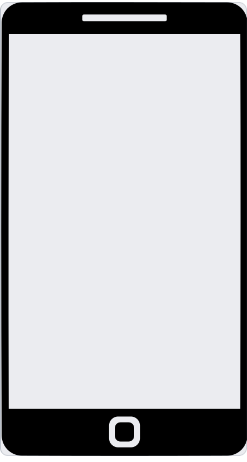
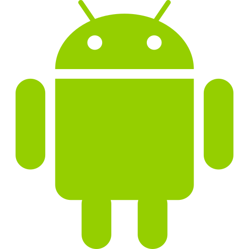
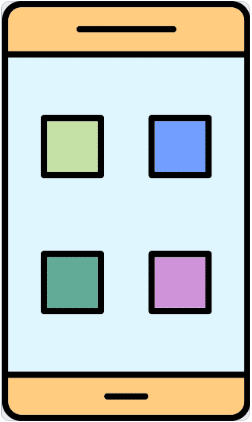

Mobileszközök
A mobil informatikai eszközök közé sorolhatunk minden olyan eszközt, amely a számítógéphez hasonlóan működik, de hordozható. Az ilyen eszközök rendelkeznek a számítógép alapvető hardverelemeivel. Tartalmaznak processzort, memóriát, kimeneti és bemeneti eszközöket. Működésüket általában operációs rendszer biztosítja.
Hordozhatóságuk miatt azonban az ilyen eszközök nem vagy nemcsak hálózati áramforrásról működnek, hanem akkumulátorral rendelkeznek. A számítógépes hálózathoz való csatlakozásuk elsősorban vezeték nélkül, wifikapcsolaton vagy mobilhálózaton keresztül történik.
A mobil eszközök a tabletek, laptopok, okostelefonok, e-book-olvasók, okosórák. Körük az újabb technológiák és megoldások fejlődésével rohamosan bővül. Használatuk, új technikai megoldásaik a mindennapi életünkre is hatással vannak.
A hagyományos asztali számítógépektől működésükben a laptopok térnek el a legkevésbé. Operációs rendszereik, szoftvereik az asztali számítógépekétől nem különböznek. Hardverük felépítése is csak annyiban, ami a hordozhatóság érdekében fontos.A tablet, táblagép: nagyobb méretű érintőképernyővel rendelkező eszköz, amelynek nincs billentyűzete. Dokumentumok szerkesztésére, hosszabb munkára kevésbé alkalmas, de nagy képernyője miatt különböző médiatartalmak kényelmesen megjeleníthetők rajta. Operációs rendszerük Android, iOS és Windows is lehet. Teljesítmény és felszereltség szempontjából az ilyen gépek széles skálán mozognak. Speciális toll segítségével kézírással is írhatunk az érintőképernyőre. Könnyű és keskeny, ezért jól hordozható eszköz.
E-book-olvasók: a hagyományos könyvek alternatívái. A legtöbb papíralapú könyvnél lényegesen vékonyabbak és kisebbek. Elektronikus formában tárolják a könyveket, ezért az ilyen eszközökön akár több könyvespolcnyi könyvet is magunkkal vihetünk. A tabletekkel ellentétben az e-book-olvasók többnyire e-tinta-technológiát használnak a kép megjelenítésére. Ennek jellemzője, hogy nincs háttérvilágítás, ezért olvasásuk az emberi szem számára sokkal kíméletesebb, mint a számítógépeké vagy tableteké, és az akkumulátor készenléti ideje is jelentősen hosszabb.
Okosórák: legtöbbször a használóik mobiltelefonjaihoz kapcsolódnak. Az idő jelzésén kívül számos funkcióval rendelkeznek. Általában alkalmasak a tulajdonos egészségügyi adatainak, sporttevékenységének nyomon követésére, esetleg zenelejátszásra, elektronikus fizetésre. Jelzik a telefonra beérkező hívásokat, üzeneteket, ezeket bizonyos modelleknél el is lehet indítani róluk.
A legszélesebb körben használt mobil informatikai eszköz. A mobiltelefont eredeti funkciója szerint csak telefonálásra és üzenetküldésre használhattuk. Idővel a fejlesztések révén kiegészült az internetes kommunikáció lehetőségével. A ma használt mobiltelefonok többsége okostelefon, amelyen operációs rendszer működik, és az alapfunkciók mellett egyéb programok futtatására is alkalmas. Jellemzőjük, hogy érintőképernyővel, kamerával rendelkeznek, és a szöveges adatokat legtöbbször virtuális képernyő-billentyűzeten vihetjük be.<>/p 
Az okostelefonokat a hardverük, az operációs rendszereik és a rajtuk futó alkalmazások fejlődése révén az életünk egyre több területén használjuk. A telefonunk ma már nagyon sok funkcióval rendelkezik. Alkalmas internetböngészésre, fénykép- és videókészítésre, zenehallgatásra és filmnézésre. Szinte bármilyen online kommunikáció folytatására használhatjuk, kezelhetjük az e-maileket, az internetalapú beszélgetéseket. Meg tudunk velük nyitni dokumentumokat, sőt sok esetben szerkeszthetjük is azokat. Személyes adataink nagyon nagy részét tároljuk ezeken az eszközökön. A rájuk telepített alkalmazások segítségével alkalmasak a mindennapi ügyeink intézésére (pl. banki, közüzemi szolgáltatást vehetünk igénybe).
Sokunk számára az okostelefon ma lényegesen több, mint egy egyszerű kommunikációs vagy informatikai eszköz. Tekinthetjük a személyi asszisztensünknek, a munkaeszközünknek, az egyik legszemélyesebb tárgyunknak. Ezért nagyon fontos, hogy használatakor a biztonságra oda kell figyelnünk.
Az okostelefonok hardvere különbözik a számítógépekétől, és az operációs rendszereik is eltérőek. A mobiltelefonokon 2 elterjedt operációs rendszer működik, az Android és az iOS rendszer.
 IOS:
IOS:
Az Apple cég iPhone telefonjain és iPad tabletjein fut. Az operációs rendszer kifejezetten ezekre a készülékekre készül, ezért jól meghatározhatók azok a hardverváltozatok, amelyeken működniük kell. Az iOS zárt forráskódú operációs rendszer, csak az Apple cég fejleszti. Az operációs rendszert használó telefonok túlnyomó többsége rendszeresen megkapja a szoftver frissítésének lehetőségét.
Android:
A Google cég fejleszti. Az Android-rendszert futtató telefonok, tabletek nagyon sokfélék. Sok gyártó eltérő felépítésű, felszereltségű hardverén kell működnie a rendszernek. Ez az egyik oka annak, hogy az operációs rendszer nyílt forráskódú. Az Androidot futtató telefonok kisebb része kap rendszeres szoftverfrissítést. A telefon gyártója kezében van az adott modellek szoftverfrissítése, amely nem feltétlenül akkor történik, amikor a Google az új verziót közzéteszi, és nem minden modellre érhető el. Míg az iOS-nél az aránylag régebbi eszközökön is frissíthető az operációs rendszer, addig az Androidnál ez gyakran hiányzik.
Applikáció
A telefonok operációs rendszereire rengeteg applikációt telepíthetünk. Az applikációk egy része ingyenes, másokért fizetni kell. Az ingyenes alkalmazások nagy részében reklámok jelennek meg, illetve alkalmazáson belüli vásárlási lehetőséget ajánlanak fel, ezzel teszik gazdaságossá készítésüket. Az applikációk, függetlenül az áruktól, a megfelelő online áruházban kereshetők, vásárolhatók meg és tölthetők le. Az Android-rendszer esetén ez a Play Áruház, az iOS esetén az App Store, a Windowsnál pedig a Microsoft Store.
A telefonos operációs rendszerekre jellemző, hogy az applikációkat ikonokkal jelenítik meg a képernyőn, és gesztusokkal irányíthatjuk ezeket. Gesztusoknak a képernyő érintésekor végzett különböző műveleteket nevezzük. Ilyen például a koppintás, a dupla koppintás, a legyintés, a húzás és a két ujjal való méretezés.